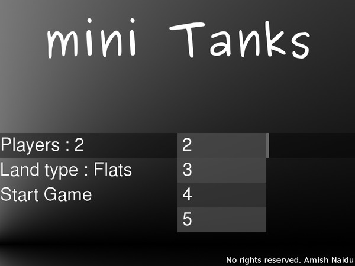
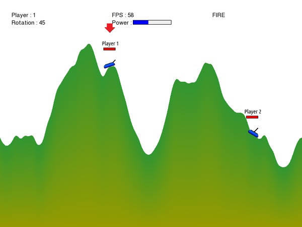
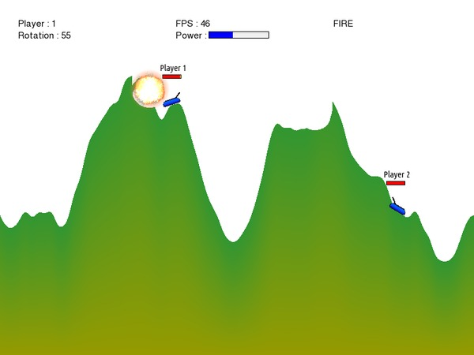
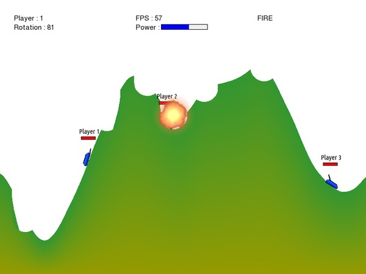
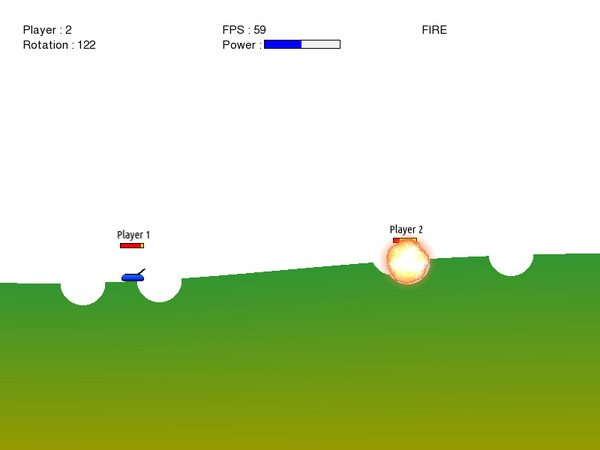
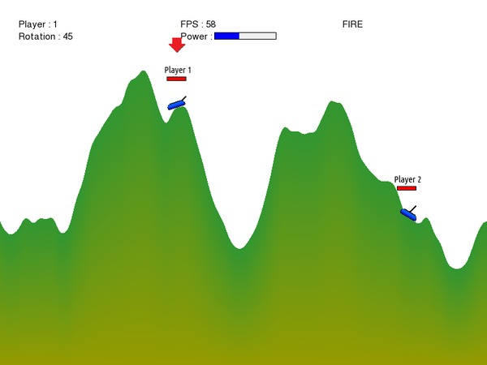
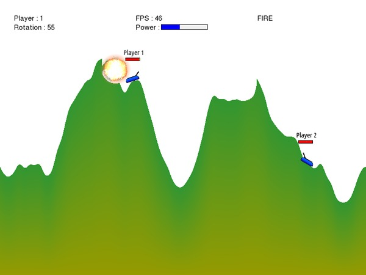
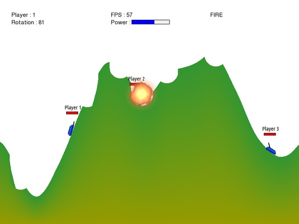
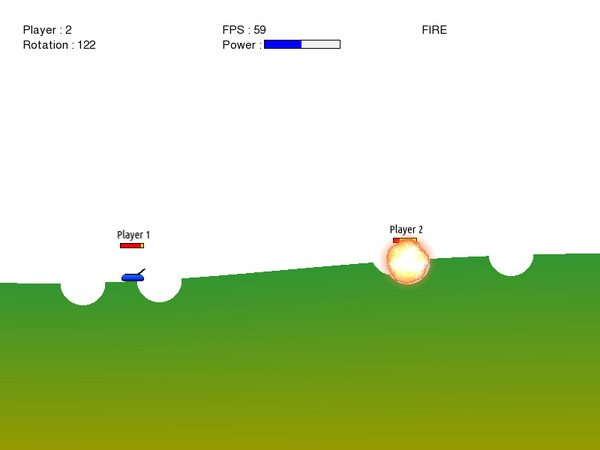

Mini Tanks
View on GitHub
A turn-based, artillery game where you destroy other tanks to win in a fully destructible, procedurally generated terrain against with upto 8 local players.This was inspired by Pocket Tanks and Scorched Earth.
Programmed in C++11 with SFML used for graphics.
Controls and Objective
Use your mouse to click on the HUD or press R to set the Rotation of the turret, similarly set power by clicking the power bar (or by hovering the cursor above it and using your scroll wheel)Use the Left or Right Arrow Keys to move the Tank on the terrain. Click on "FIRE" on the HUD or press Space to fire. The objective is to destroy all other tanks and win by surviving till the last.
Screenshots









Gameplay video
Watch on YouTubeDownload
Download the sourceExecutables :
Note : These are outdated by a few commits (which were only some fixes). It is recommended to compile Mini Tanks from source if you can.
Linux 32-bit (compiled using g++ 4.8.1)
Windows 32-bit (compiled using VC 2013 and requires VC2013 redistributable)
Compiling
You need a C++11 compliant compiler and SFML 2.0+ to compile Mini Tanks. After you've downloaded the source, you can use cmake to compile Mini Tanks.On any Linux distribution, these are the typical steps :
$ git clone https://github.com/amhndu/tanks-game $ cd tanks-game $ cmake . $ makeIf you don't have cmake and don't wish to install it either, then you can simply compile Mini Tanks by compiling all the cpp files and then linking them with SFML using your IDE/compiler. e.g. With g++, you can enter this command :
$ g++ -o miniTanks *.cpp -std=c++11 -lsfml-graphics -lsfml-window -lsfml-systemNote : To compile on windows, you also need to link the sfml-main component.